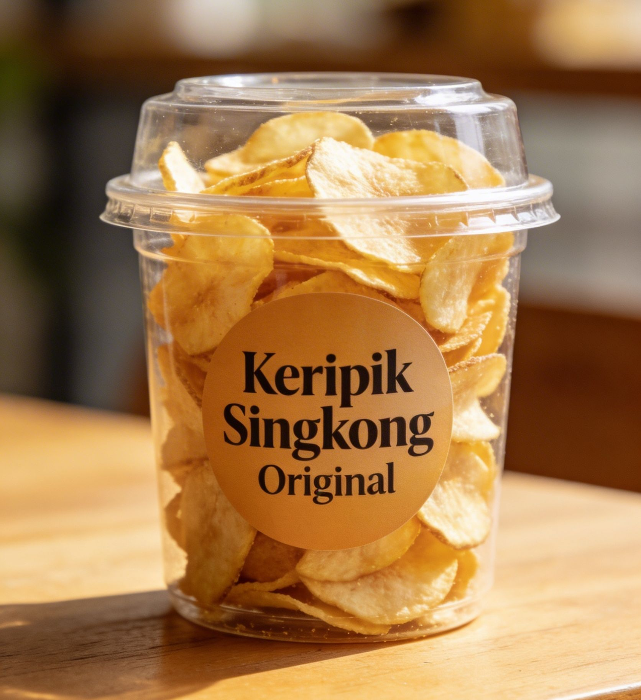
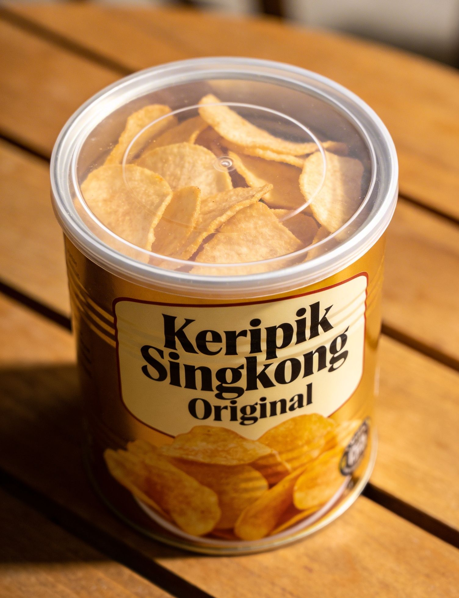

Resep Keripik Singkong Original Renyah

Anda bisa membuat keripik singkong dengan cara di iris tipis dan langsung digoreng, namun hasilnya tidak selalu renyah. Untuk mendapatkan hasil yang renyah, lakukanlah beberapa cara berikut (jika tidak, nanti akan sulit renyah):
📌
- Pengirisan yang tipis dan seragam.
- Menggorengnya sedikit demi sedikit.
- Harus menggunakan minyak kemasan yang bagus, bukan curah atau campuran.
- Harus menggunakan wajan yang tebal.
Berikut adalah langkah-langkah lengkap membuat keripik singkong yang renyah.
Peralatan Penting:
- Alat potong singkong (pengiris tipis).
Bisa pakai pisau tipis tajam, mandolin, atau perajang model ayun.
- Blender (untuk membuat bumbu tabur).
Jika tidak ingin repot membuatnya, sekarang banyak tersedia bumbu tabur instant untuk keripik di toko-toko.
Bahan Utama:
- 3 kg singkong segar, keras, dan bebas bercak hitam
- Minyak goreng secukupnya untuk deep fry
Bumbu:
- 3 sdm gula pasir
- 1 sdt garam halus
- 2 kemiri
- 1½ bawang putih
- ½ sdt Royco ayam
Cara Membuat:
- Persiapan Singkong: Kupas kulit singkong, cuci bersih, lalu iris tipis merata (gunakan mandolin untuk hasil lebih konsisten).
- Penggorengan: Goreng dengan api sedang hingga suhu sekitar 160-180°C. Goreng irisan secara sedikit-sedikit saja, kira-kira rata permukaan atau satu genggam saja / ltr minyak. Goreng hingga berwarna keemasan. Angkat dan tiriskan.
- Pemberian Bumbu:
- Iris bawang putih lalu tumis hingga matang.
- Cincang kasar kemiri lalu tumis atau sangrai dengan api kecil.
- Blender jadi satu dengan gula, garam, dan Royco hingga halus, tanpa air atau minyak.
- Campurkan ke keripik yang masih hangat didalam wadah hingga rata. Campurkan setengah bagian dulu, untuk menghindari keripik hancur.
- Penyimpanan: Biarkan dingin sepenuhnya, lalu simpan dalam toples kedap udara.
Dengan cara diatas InsyaAllah keripik akan lebih renyah.
📝 Namun perlu diingat, jika untuk dijual dalam jumlah banyak, mungkin cara ini kurang begitu disarankan, karena harus digoreng sedikit-sedikit biar renyah. Di akhir artikel, ada tips khusus untuk penjual.
Resep Keripik Singkong Balado
Bahan Utama:
- Keripik singkong original yang sudah digoreng
- 50 gram cabai merah keriting
- 20 gram cabai rawit (sesuaikan tingkat kepedasan)
- 6 siung bawang putih
- 2 bulatan gula merah
- 100 gram gula pasir
- 1 sdt kaldu bubuk
- 100 ml air
- 1 sdt cuka masak
- Minyak goreng secukupnya
Cara Membuat:
- Bumbu Balado: Blender cabai dan bawang putih hingga halus. Tumis bumbu dengan sedikit minyak hingga harum.
- Saus Balado: Tambahkan air, gula merah, gula pasir, dan kaldu bubuk. Masak hingga mengental seperti karamel dan meletup-letup, lalu tambahkan cuka dan aduk rata.
- Campurkan Keripik: Matikan api, masukkan keripik singkong ke dalam wajan, aduk cepat hingga bumbu merata. Angkat dan biarkan dingin sebelum menyimpan.
Tips untuk Jualan

- Pilih Bahan Berkualitas: Gunakan singkong segar dan bebas cacat agar hasil keripik tidak pahit atau keras.
- Perendaman: Rendam terlebih dahulu irisan singkong ke dalam larutan kapur sirih (1sdt) dan baking soda (½sdt) tiap 1 liter air, selama 30 menit - 1 jam. Ini bertujuan untuk membuat keripik sangat renyah dan bisa digoreng dalam jumlah banyak (3-4 genggam/ltr minyak). Ciri-ciri kebanyakan ialah bergumpal. Bilas & keringkan dulu sampai benar-benar bersih & kering sebelum digoreng. (Ini adalah saran dari para ahli).
- Konsistensi Produk: Gunakan alat seperti mandolin, perajang model ayun, atau perajang mesin listrik untuk irisan yang sama tebalnya dan jaga suhu minyak agar keripik matang merata.
- Varian Rasa: Selain balado, coba rasa keju, barbekyu, atau pedas manis untuk menarik lebih banyak pembeli.
- Kemasan yang Tepat: Gunakan kemasan kedap udara seperti toples plastik atau kantong vacuum untuk menjaga kerenyahan. Tambahkan label dengan nama produk, tanggal dibuat, dan tanggal kadaluarsa.
- Pemasaran: Manfaatkan media sosial atau marketplace untuk mempromosikan produk Anda.
Berikut adalah bumbu varian rasa yang saya sebutkan pada no.4 diatas:
1. Rasa Keju:
- Bubuk Keju Cheddar
- Keju Parmesan Bubuk
- Bubuk Bawang Putih
- Bubuk Bawang Merah
- Garam Halus
- Sedikit Gula Halus
2. Rasa Barbekyu:
- Paprika
- Smoked Paprika
- Gula Coklat Halus
- Bubuk Bawang Putih
- Bubuk Bawang Merah
- Bubuk Mustard
- Cabai Rawit Merah
- Garam Halus
3. Rasa Pedas Manis:
- Cabai Rawit Merah
- Bubuk Cabai
- Paprika
- Lada Hitam
- Garam Halus
- Gula Halus